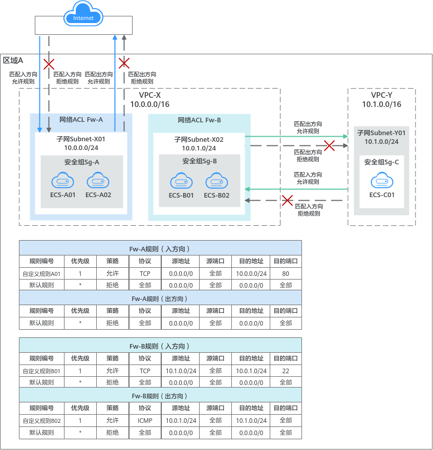
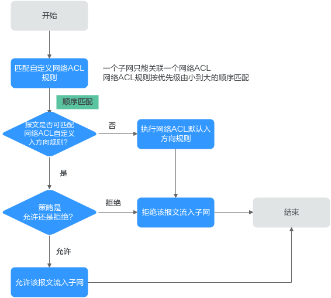

网络ACL
1. 网络ACL概述¶
1.1. 网络ACL¶
网络ACL是一个子网级别的可选安全防护层，您可以在网络ACL中设置入方向和出方向规则，并将网络ACL绑定至子网，可以精准控制出入子网的流量。
网络ACL与安全组的防护范围不同，安全组对云服务器、云容器、云数据库等实例进行防护，网络ACL对整个子网进行防护。安全组是必选的安全防护层，当您还想增加额外的安全防护层时，就可以启用网络ACL。两者结合起来，可以实现更精细、更复杂的安全访问控制。
网络ACL中包括入方向规则和出方向规则，您可以针对每条规则指定协议、来源端口和地址、目的端口和地址。以图1为例，在区域A内，某客户的虚拟私有云VPC-X有两个子网，子网Subnet-X01关联网络ACL Fw-A，Subnet-X01内部署的实例面向互联网提供Web服务。子网Subnet-X02关联网络ACL Fw-B，基于对等连接连通Subnet-X02和Subnet-Y01的网络，通过Subnet-Y01内的实例远程登录Subnet-X02内的实例。
-
Fw-A的规则说明：
入方向自定义规则，允许外部任意IP地址，通过TCP (HTTP)协议访问Subnet-X01内实例的80端口。如果流量未匹配上自定义规则，则匹配默认规则，无法流入子网。
网络ACL是有状态的，允许入站请求的响应流量出站，不受规则限制，因此Subnet-X01内实例的响应流量可流出子网。非响应流量的其他流量则匹配默认规则，无法流出子网。
-
Fw-B的规则说明：
入方向自定义规则，允许来自Subnet-Y01的流量，通过TCP (SSH)协议访问子网Subnet-X02内实例的22端口。
出方向自定义规则，放通ICMP协议全部端口，当在Subnet-X02内实例**ping**测试网络连通性时，允许去往Subnet-Y01的流量流出子网。
图1 网络ACL架构图

{kind=link}
[!NOTE] 说明： 图1中提供的示例仅为您展示了网络ACL对出入子网的流量控制。在实际业务中，除了网络ACL，实例上绑定的安全组也会影响出入实例的流量。进一步了解网络ACL与安全组的详细信息，请参见VPC访问控制概述。
1.2. 网络ACL规则¶
- 网络ACL中包括入方向规则和出方向规则，用来控制VPC子网入方向和出方向的网络流量。
- 入方向规则：控制外部请求访问子网内的实例，即流量流入子网。
- 出方向规则：控制子网内实例访问外部的请求，即流量流出子网。
-
网络ACL规则由协议、源端口/目的端口、源地址/目的地址等组成，关键信息说明如下：
-
优先级：即网络ACL规则的序号，网络ACL规则按照该序号依次排列，流量则按照规则序号进行匹配。优先级数字越小，表示规则排序越靠前，流量越先匹配该规则。
默认网络ACL规则优先级的值为“*”，排在末尾，优先级最低。
-
状态：网络ACL规则有“启用”和“停用”状态。启用时，网络ACL规则生效，停用时，网络ACL规则不生效。
- 类型：支持设置IPv4和IPv6协议的规则。
- 策略：支持允许或拒绝。当流量的协议、源端口/目的端口、目源地址/目的地址成功匹配某个网络ACL规则后，会对流量执行规则对应的策略，允许或拒绝流量。
- 协议：匹配流量的网络协议类型，支持TCP、UDP、ICMP协议。
-
源地址/目的地址：匹配流量的源地址或者目的地址。
您可以使用IP地址和IP地址组作为源地址或者目的地址。
- IP地址：某个固定的IP地址或者网段，支持IPv4和IPv6地址。比如：192.168.10.10/32（IPv4地址）、192.168.1.0/24（IPv4网段）、2407:c080:802:469::/64（IPv6网段）
- IP地址组：IP地址组是一个或者多个IP地址的集合，对于安全策略相同的IP网段和IP地址，建议您使用IP地址组简化管理。
-
源端口范围/目的端口范围：匹配流量的源端口或者目的端口，取值范围为1～65535。
-
1.3. 网络ACL及规则的工作原理¶
- 网络ACL创建完成后，需要将网络ACL关联至目标子网，网络ACL规则才能控制出入该子网的流量。网络ACL可以同时关联多个子网，但一个子网只能关联一个网络ACL。
- 网络ACL是有状态的。如果您从实例发送一个出站请求，且该网络ACL的出方向规则是放通的话，那么无论其入方向规则如何，都将允许该出站请求的响应流量流入。同理，如果该网络ACL的入方向规则是放通的，那无论出方向规则如何，都将允许该入站请求的响应流量可以流出。
-
网络ACL使用连接跟踪来标识进出实例的流量信息，入方向和出方向网络ACL规则配置变更，对原有流量不会立即生效。
当您在网络ACL内增加、删除、更新规则，或者在网络ACL内添加、移出子网时，由入方向/出方向流量建立的连接，已建立的长连接不会断开，依旧遵循原有网络ACL规则。入方向/出方向流量新建立的连接，将会匹配新的网络ACL出方向规则。
[!NOTE] 须知： 对于已建立的长连接，流量断开后，不会立即建立新的连接，需要超过连接跟踪的老化时间后，才会新建立连接并匹配新的规则。比如，对于已建立的ICMP协议长连接，当流量中断后，需要超过老化时间30s后，将会新建立连接并匹配新的规则，详细说明如下： - 不同协议的连接跟踪老化时间不同，比如已建立连接状态的TCP协议连接老化时间是600s，ICMP协议老化时间是30s。对于除TCP和ICMP的其他协议，如果两个方向都收到了报文，连接老化时间是180s，如果只是单方向收到了报文，另一个方向没有收到报文，则连接老化时间是30s。 - TCP协议处于不同状态下的连接老化时间也不相同，比如TCP连接处于ESTABLISHED（连接已建立）状态时，老化时间是600s，处于FIN-WAIT（连接即将关闭）状态时，老化时间是30s。
- 在网络ACL中，存在如表1所示的默认规则。当网络ACL中没有其他允许流量出入的自定义规则时，则匹配默认规则，拒绝任何流量流入或流出子网。在您将网络ACL关联至目标子网时，请确保已添加自定义规则放通业务流量，或者子网内无实际业务，避免默认规则造成业务流量中断。
表1 网络ACL默认规则说明
| 方向 | 优先级 | 策略 | 协议 | 源地址 | 源端口范围 | 目的地址 | 目的端口范围 |
|---|---|---|---|---|---|---|---|
| 入方向 | * | 拒绝 | 全部 | 0.0.0.0/0 | 全部 | 0.0.0.0/0 | 全部 |
| 出方向 | * | 拒绝 | 全部 | 0.0.0.0/0 | 全部 | 0.0.0.0/0 | 全部 |
- 网络ACL规则不会匹配筛选表2中的流量，即对应的流量被允许流入或者流出子网，不受网络ACL默认规则以及自定义规则限制。
表2 不受网络ACL规则限制的流量
| 规则说明 | |
|---|---|
| 入方向 | 放通当前子网内的流量，即允许同一个子网内实例互通。 放通目的地址为255.255.255.255/32的广播流量。 放通目的地址为224.0.0.0/24的组播流量。 |
| 出方向 | 放通当前子网内的流量，即允许同一个子网内实例互通。 放通目的地址为255.255.255.255/32的广播流量。 放通目的地址为224.0.0.0/24的组播流量。 放通基于TCP协议，目的地址为169.254.169.254/32 ，目的端口为80的云服器元数据(metadata)流量。 放通目的地址为100.125.0.0/16的流量，该网段是云上公共服务预留地址，比如DNS服务器地址、NTP服务器地址等。 |
1.4. 流量匹配网络ACL规则的顺序¶
一个子网只能绑定一个网络ACL，当网络ACL存在多条规则时，流量按照规则的优先级进行匹配。优先级的数字越小，优先级越高，越先执行该规则。默认规则优先级的值为“*”，优先级最低。
以入方向的流量为例，子网的网络流量将按照以下原则匹配网络ACL规则，入方向和出方向的流量匹配顺序相同。
- 当流量匹配上自定义规则，则根据规则策略决定流量走向。
- 当策略为拒绝时，则拒绝该流量流入子网。
- 当策略为允许时，则允许该流量流入子网。
- 当流量未匹配上任何自定义规则，则执行默认规则，拒绝流量流入子网。
图2 网络ACL匹配顺序

{kind=link}
1.5. 网络ACL配置示例¶
网络ACL可以控制流入/流出子网的流量，当网络ACL和安全组同时存在时，流量先匹配网络ACL规则，然后匹配安全组规则。您可以灵活调整安全组的规则，并使用网络ACL作为子网的额外防护。以下为您提供了典型的网络ACL应用示例。
---tab 控制外部对子网内实例的访问
本示例如[图3](https://support.huaweicloud.com/usermanual-vpc/acl_0001.html#acl_0001__fig10520164931919)所示，子网Subnet-A内的两个业务实例ECS-A01和ECS-A02网络互通，并允许白名单实例远程登录业务实例，白名单实例的IP地址为10.1.0.5/32。白名单实例可能是VPC-A的其他子网或者其他VPC内的实例，也可以是本地计算机，可远程连接业务实例执行运维操作。因此，网络ACL和安全组规则需要放通白名单实例的流量，拦截来自其他网络的流量，规则配置如下：
- 网络ACL规则：
- 入方向：自定义规则A01允许白名单实例，通过SSH远程登录子网Subnet-A内的实例。默认规则拒绝其他网络流量流入子网。
- 出方向：网络ACL是有状态的，允许入站请求的响应流量流出，因此不用额外添加规则放通白名单实例的响应流量。默认规则拒绝其他网络流量流出子网。
- 安全组规则：
- 入方向：规则A01允许白名单实例，通过SSH远程登录子网Subnet-A内的实例。规则A02允许安全组内实例互通。其他流量无法流入安全组内实例。
- 出方向：规则A03允许所有流量从安全组内实例流出。
**图3** 控制外部对子网内实例的访问

如果您设置了过于宽松的安全组规则，此时网络ACL规则会作为额外防护。如[表3](https://support.huaweicloud.com/usermanual-vpc/acl_0001.html#acl_0001__table20321112045011)所示，安全组规则允许任意IP地址远程登录安全组内实例。此时子网Subnet-A关联的网络ACL Fw-A，其入方向规则仅允许指定IP地址(10.1.0.5/32)访问Subnet-A内的实例，默认规则会拒绝其他流量流入子网，消除可能存在的安全风险。
**表3** 安全组规则
| 方向 | 优先级 | 策略 | 类型 | 协议端口 | 源地址 | 规则作用 |
| :----- | :----- | :--- | :--- | :------------ | :---------------- | :---------------------------------------- |
| 入方向 | 1 | 允许 | IPv4 | 自定义TCP: 22 | IP地址：0.0.0.0/0 | 允许任意IP地址通过SSH远程登录安全组内实例 |
---tab 控制不同子网内实例的互通和隔离
本示例如[图4](https://support.huaweicloud.com/usermanual-vpc/acl_0001.html#acl_0001__fig1452632343)所示，VPC-X内有两个子网Subnet-X01和Subnet-X02，ECS-01和ECS-02属于Subnet-X01，ECS-03属于Subnet-X02。三台ECS的网络通信需求如下：
- ECS-02和ECS-03网络互通
- ECS-01和ECS-03网络隔离
为了实现以上网络通信需求，本示例的安全组和网络ACL配置如下：
1. 三台ECS属于同一个安全组Sg-A，在Sg-A中添加入方向和出方向规则，确保安全组内实例网络互通。
此时子网还未关联网络ACL，安全组规则配置完成后，ECS-01、ECS-02均可以和ECS-03进行通信。
2. 将两个子网均关联至网络ACL Fw-A。
当Fw-A中只有默认规则时，同一个子网内实例网络互通，不同子网内实例网络隔离。此时ECS-01和ECS-02网络互通，ECS-01和ECS-03网络隔离、ECS-02和ECS-03网络隔离。
3. 在网络ACL Fw-A中添加自定义规则，放通ECS-02和ECS-03之间的网络。
- 自定义规则A01：允许来自ECS-03的流量流入子网。
- 自定义规则A02：允许来自ECS-02的流量流入子网。
- 自定义规则A03：允许访问ECS-03的流量流出子网。
- 自定义规则A04：允许访问ECS-02的流量流出子网。
**图4** 控制不同子网内实例的互通和隔离

[!NOTE] 说明： 更多网络ACL规则配置示例，请参见网络ACL配置示例。
1.6. 网络ACL配置流程¶
{kind=link}
表4 网络ACL配置流程说明
| 序号 | 步骤 | 说明 | 操作指导 |
|---|---|---|---|
| 1 | 创建网络ACL | 网络ACL创建完成后，自带入方向和出方向默认规则，拒绝出入子网的流量。 | 创建网络ACL |
| 2 | 配置网络ACL规则 | 网络ACL默认规则不支持删除和修改，您需要根据业务需求添加自定义规则，用于控制流入或流出子网的流量，流量将会优先匹配自定义规则。 | 添加网络ACL规则（默认生效顺序） 添加网络ACL规则（自定义生效顺序） |
| 3 | 将子网关联至网络ACL | 您需要将子网关联至网络ACL，并且当网络ACL状态为“已开启”时，网络ACL规则会对出入子网的流量生效。 一个子网只能关联一个网络ACL。 |
将子网关联至网络ACL |
1.7. 网络ACL的使用限制¶
- 在一个区域内，单个用户默认最多可以创建200个网络ACL。
- 建议一个网络ACL单方向拥有的规则数量不要超过100条，否则会引起网络ACL性能下降。
- 在一个网络ACL的入方向中，最多可以有124条规则关联IP地址组，出方向同理。
-
当您的组网中存在以下情况时，来自ELB和VPCEP的流量不受网络ACL和安全组规则的限制。
-
ELB实例的监听器开启“获取客户端IP”功能时，不受限制。
比如规则已明确拒绝来自ELB实例的流量进入后端云服务器，此时该规则无法拦截来自ELB的流量，流量依然会抵达后端云服务器。
-
VPCEP实例类型为“专业型”时，不受限制。
-
1.8. 参考资源¶
- https://support.huaweicloud.com/usermanual-vpc/acl_0001.html